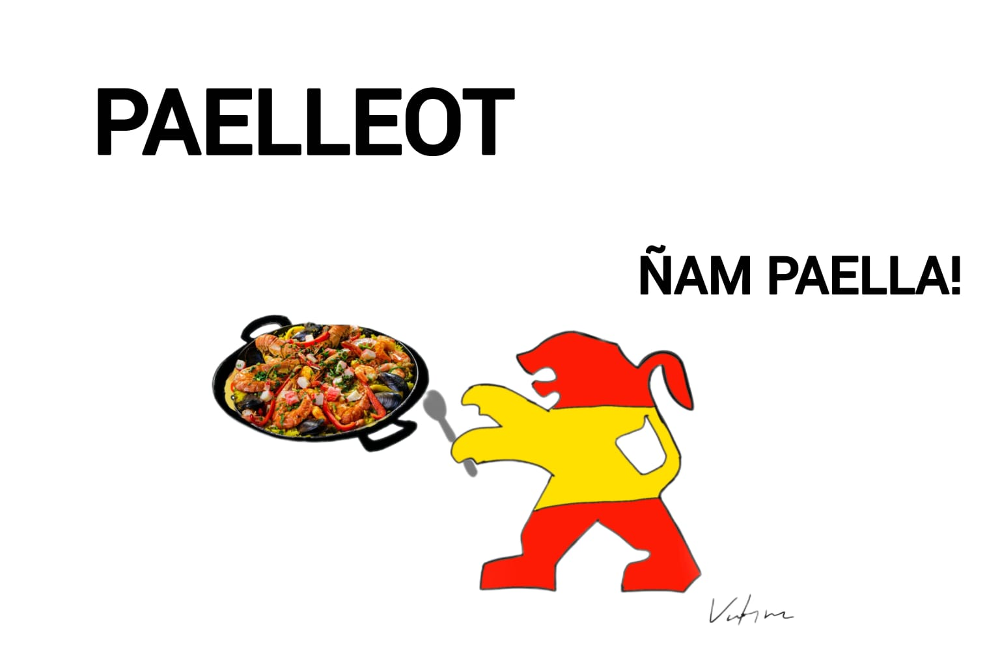

La historia del señor Carlos y su Dodge Stratus 1999
ML- Una historia que sigue recorriendo kilómetros30 Julio 2026 | 19:00 pm

Dodge Stratus propiedad Carlos . Fotografía tomada por el propietario y cedida para este artículo.
Desde Salamanca, Guanajuato (México), el señor Carlos conserva un compañero que ha marcado gran parte de su vida: un Dodge Stratus modelo 1999. Su padre lo adquirió en 2001, convirtiéndose en el segundo propietario del vehículo, que en aquel entonces se encontraba completamente original.

La llegada de la cultura tuning, impulsada por el éxito de la saga Rápido y Furioso, despertó en el señor Carlos el deseo de transformar su automóvil. Su objetivo era claro: convertirlo en un Stratus único. Para lograrlo, instaló una nueva defensa delantera y trasera, añadió estribos laterales y un alerón en la cajuela. También pintó los cálipers en color morado, montó rines de 20 pulgadas con neumáticos 225/35 R20, instaló polarizado en los cristales y mejoró el sistema de audio.
Más allá de las modificaciones, el verdadero valor del Stratus está en la historia que representa. Durante casi veinticinco años, el señor Carlos ha compartido innumerables momentos con este automóvil. Aunque continúa siendo su vehículo de uso diario, procura conservarlo con el mismo cuidado y dedicación que el primer día, demostrando que un auto puede convertirse en parte de la historia de quien lo conduce.
Los orígenes de la marca Peugeot
El emblema del león de Peugeot sin duda resalta entre todas las marcas, pero ¿saben por qué Peugeot lo eligió como emblema? Todo se remonta a sus inicios en 1810 cuando la familia Peugeot decide Iniciar produciendo herramientas de Acero y molinos de café , se dice que ellos querían representar con el león la resistencia del acero y eligieron el león por su fortaleza y ferocidad, más adelante esta marca inicio con la fabricación de bicicletas, lo que llevo a la creación del primer vehículo a motor de vapor llamado (Peugeot Type 1-1889) y posteriormente el primer automóvil de combustión interna llamado(Peugeot Type 2-1890)

spain peugeot- ML(valtyna)
Rally WRC
Muchos desconocen que el Peugeot 206 estuvo en competición, y no precisamente en la versión que transita normalmente en las calles.se trata de la versión WRC que fue creada únicamente para el campeonato mundial de Rally WRC, entre (1999 y 2003) obteniendo tres títulos consecutivos en el Campeón del Mundo de Constructores entre (2000 y 2002), esto ayudo a aumentar la popularidad de este modelo
Una estrella de los videojuegos
Dentro de la industria de los video Juegos El Peugeot 206 hizo su aparición por primera vez en 1999- Gran Turismo 2 y más adelante en Gran Turismo 3, Gran Turismo 4 y Need for Speed, Bajo esta perspectiva un auto que aparezca en un video juego debe ser muy popular y único. no todos pueden decir que su auto está en un juego como Need for Speed.